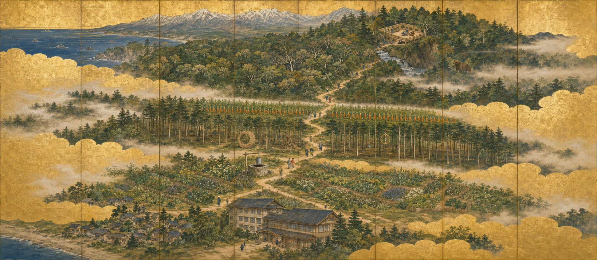
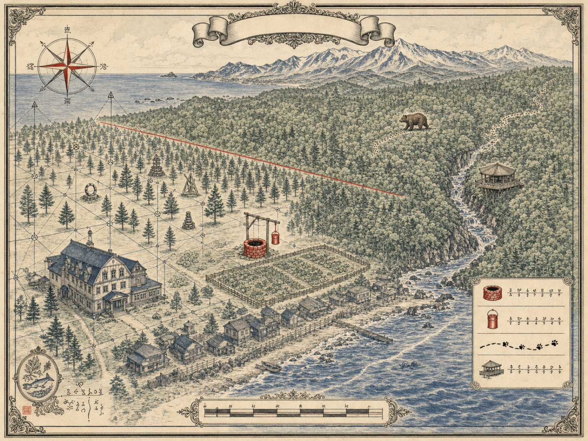
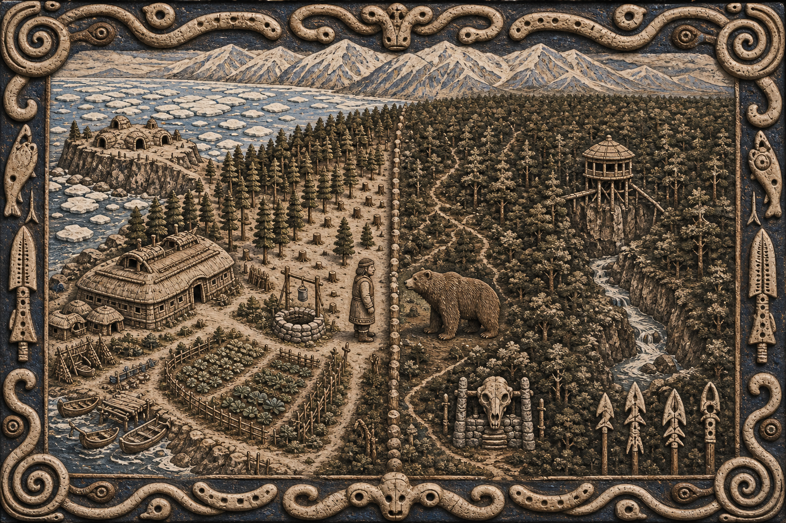
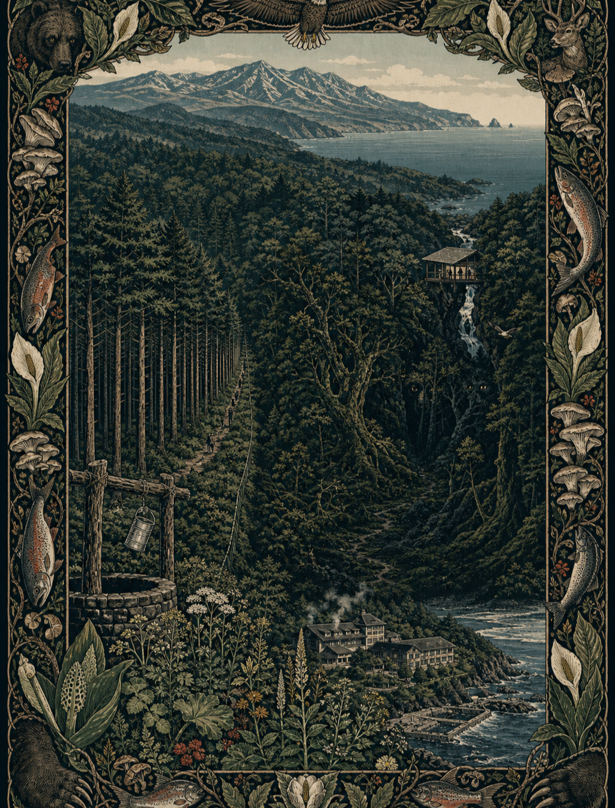
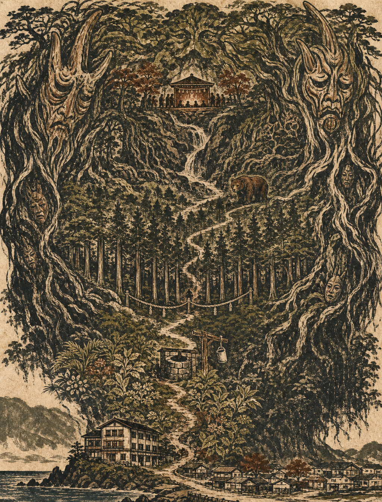

5案とも描いている中身は同一——ホテル／有用里山／井戸と一斗缶／間伐した人工林とアート／人参畑の境界線／天然林と獣道／渓谷上のラウンジ／知床連山とオホーツク海／クマ。変えたのは絵の文法だけなので、差はそのまま「どの世界観でこの森を語るか」の差になる。





5案は優劣ではなく用途が違う。説明図として読める案（01・02）と、世界観を立てる案（03・04・05）は排他ではないので、資料の面ごとに割り当てる。
| 試行 | 狙い |
|---|---|
| 02 を、右（原生林）を画面の主役に据えた構図で再生成 | 開拓＝正義の視線を外し、「測れなかったもの」を主題に反転させる |
| 05 の意匠をオホーツク／アムール系に入れ替えて再生成 | アニミズムの表現力を保ったまま文化的な不適を解消する |
| 04 の縦位置を横位置で再生成 | スライド表紙とA4横の両方に使えるようにする |
| 01 の霞による4分節を 02 の測量図に移植 | ゾーンの分節と図法の主題を1枚に統合できるか試す |
prompts/*.txt を書き換えて VARIANT=b bash 04_illustration_tone/generate_samples.sh 02。別名で保存されるので既存は消えない。